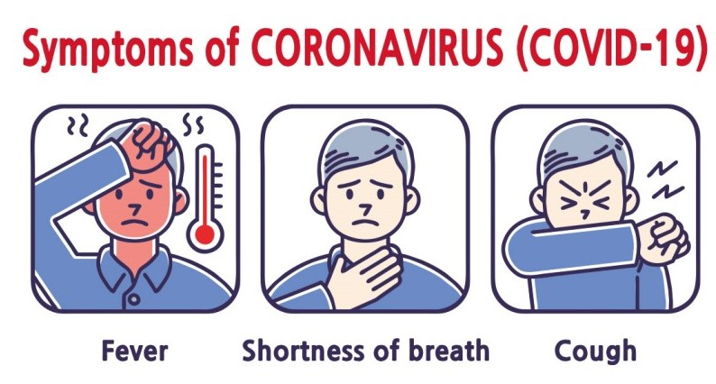
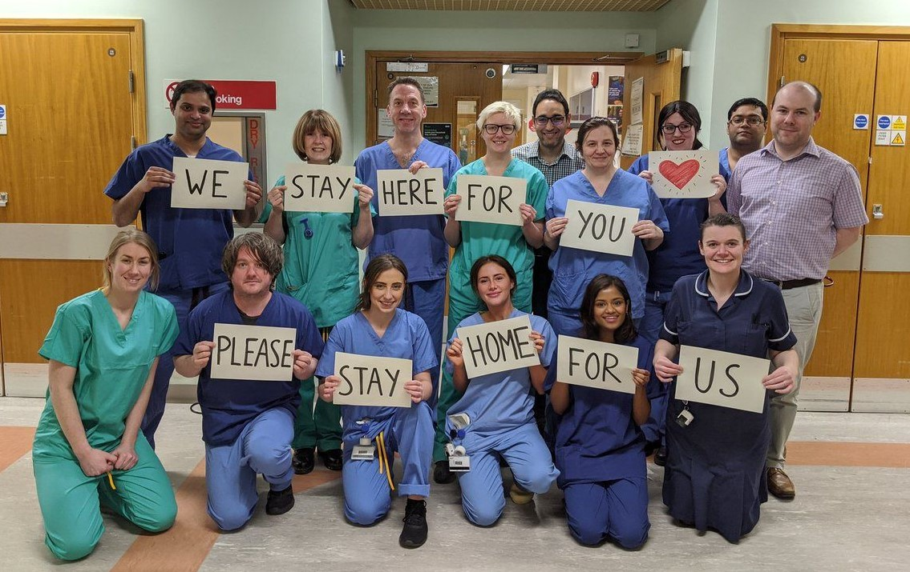

What is COVID-19?
COVID-19 is a respiratory disease caused by the coronavirus. It attacks the human ventilation system and creates pneumonia-like symptoms.

Why is it dangerous?
The biggest danger of COVID-19 is that there are many asymptomatic cases. This means that some people may be a carrier of the disease and be unaware, so they can unknowingly spread it to many others. COVID-19 symptoms typically do not present themselves until 5 days after infection, which is why there are many carriers who are unaware of it, increasing the risk of transimssion. There are also many asymptomatic cases which pose a similar danger.

In general, COVID-19 does not have very serious consequences other than coughing, fatigue and fever for around a week. However, there are some cases that can worsen which can lead to permanent scarring in the lungs or even death. People who are over 60 years old and have existing health conditions are especially prone to this.

Why should you donate?
Hospital staff, emergency workers and volunteers are all helping people who have been infected with COVID-19, but by doing so, they are putting their own lives at risk. To help their service to the community, donating can help them receive more supplies like food and water, masks, and other necessities.
DONATE NOW
How should you protect yourself?
Practice a hygienic lifestyle by avidly washing your hands and avoid touching your eyes, nose and mouth. Distance yourself from public spaces and avoid coming in contact with other people. If you are to go into a public space, wear a mask!
Who We Are
Hello! Thank you for visiting this website! We are two students currently in high school who are amateur programmers. Through this website, we hope to help frontliners around the globe in their fight against COVID-19. We hope this site will provide helpul information as well as make finding donation sites much easier.